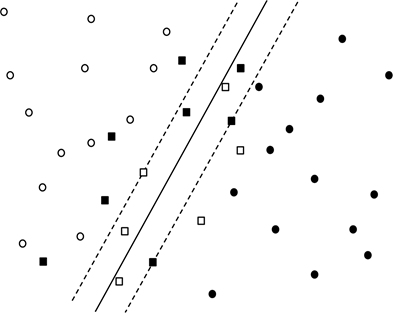

A simplified Support vector machines (SVMs) is typically a linear classifier, which produces a hyperplane in a vector space that attempts to separate the two classes in the dataset.
Support vectors are the data points, which are closest to the hyperplane. These points will define the separating line better by calculating margins. These points are more relevant to the construction of the classifier.
A hyperplane is a decision plane that separates between a set of objects having different class memberships.
A margin is a gap between the two lines on the closest class points. This is calculated as the perpendicular distance from the line to support vectors or closest points. If the margin is larger in between the classes, then it is considered a good margin, a smaller margin is a bad margin.

Figure: Classification boundary (dark line) and margins (dashed lines) for linear SVM separating two classes (black and white points); squares represent support vectors.
The above figure shows a concrete example: the two classes are represented by white and black points, respectively. The solid line is the separating plane and the dashed lines are the margins. The square points are the support vectors; that is, those that provide nonzero contribution to the loss function. This loss function is expressed mathematically as:
Where %3Cmath%20xmlns%3D%26quot%3Bhttp%3A%2F%2Fwww.w3.org%2F1998%2FMath%2FMathML%26quot%3B%3E%3Cmi%3E%26amp%3B%23x3B2%3B%3C%2Fmi%3E%3C%2Fmath%3Eis the margin, %3Cmath%20xmlns%3D%26quot%3Bhttp%3A%2F%2Fwww.w3.org%2F1998%2FMath%2FMathML%26quot%3B%20alttext%3D%26quot%3Bxi%20Subscript%20i%26quot%3B%3E%3Cmsub%3E%3Cmi%3E%26amp%3B%23x3BE%3B%3C%2Fmi%3E%3Cmi%3Ei%3C%2Fmi%3E%3C%2Fmsub%3E%3C%2Fmath%3E is the distance from the ith support-vector to the margin, and C is a model hyperparameter that determines the relative contribution of the two terms.